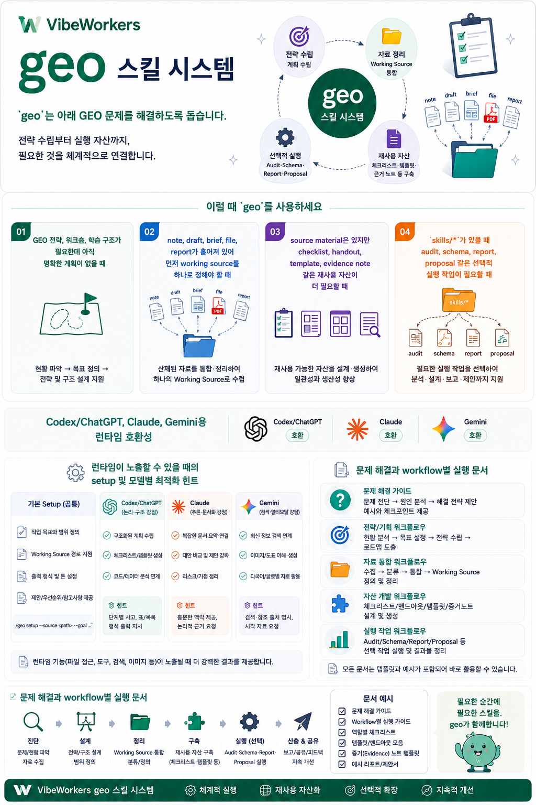

GEO가 해결하는 문제
- 아직 명확한 GEO 전략, 워크숍 구조, 학습 계획이 없습니다.
- 노트, 브리프, 초안, 파일, 보고서가 흩어져 있습니다.
- 체크리스트, 템플릿, 핸드아웃, 근거 노트 같은 재사용 자산이 부족합니다.
- 감사, 스키마, 보고서, 제안서 같은 선택적 실행 작업이 필요합니다.
VibeWorkers
전략 수립, Working Source 통합, 재사용 자산화, 선택적 실행 workflow를 하나의 portable GEO 패키지로 연결합니다.

geo <request> 라우터 계약.skills/* 아래 선택적 실행 서브스킬.이 페이지는 Open Graph와 schema.org 메타데이터를 포함한 코드 기반 공유 surface입니다.
github.com/vibeworkers/geo 저장소 URL 자체의 미리보기
이미지는 GitHub의 repository Social preview 설정이 소유합니다.